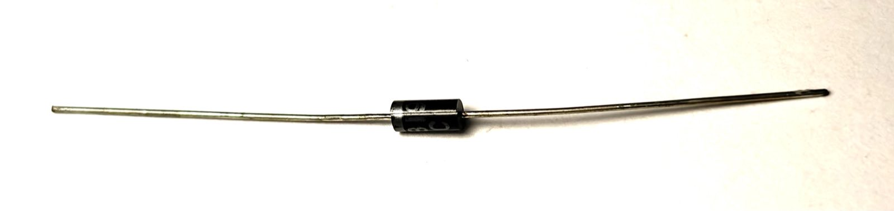

Proč polarita u těchhle dvou součástek záleží, a co se doopravdy děje uvnitř polovodiče.
Dioda propouští elektrický proud jen jedním směrem, jako jednosměrná ulička. LED je speciální dioda, která navíc při průchodu proudu svítí.
Dioda je nejjednodušší polovodičová součástka. Uvnitř má dvě odlišně upravené (dotované) vrstvy křemíku, jednu s přebytkem elektronů (typ N), druhou s jejich nedostatkem, takzvanými děrami (typ P). Na rozhraní obou vrstev vznikne tenká oblast bez volných nosičů náboje, které se říká přechod PN.
Zjednodušené schéma: ve správném směru přechod propustí proud, v obráceném ho blokuje.
Přiložíš-li napětí ve správném (propustném) směru, elektrony a díry se k přechodu tlačí proti sobě, přechod se zúží a od určitého prahového napětí (u křemíkových diod kolem 0,6 V, u LED podle barvy 1,8 až 3,3 V) jím proud volně protéká. V obráceném (závěrném) směru se nosiče náboje naopak od přechodu vzdalují, oblast bez volných nosičů se rozšíří a proud přechodem prakticky neteče, dokud napětí nepřekročí mez, kterou dioda vydrží.
Přesně proto má dioda 1N5817 na desce jasně danou orientaci (proužek ke straně K, katoda), chrání zbytek desky tak, že ve špatně zapojeném směru (třeba obráceně vložený napájecí konektor) proud jednoduše nepustí dál.
LED (light-emitting diode) je speciální dioda ze specifických polovodičových materiálů. Když jí ve správném směru protéká proud, elektrony na přechodu "padají" na nižší energetickou hladinu a přebytečnou energii vyzáří jako foton, světlo. Barva světla je daná materiálem polovodiče (a tedy velikostí toho energetického skoku), ne barvou vnějšího pouzdra LED.
Značení jednotek: E energie fotonu [J] nebo [eV], h Planckova konstanta [J·s], c rychlost světla [m/s], λ vlnová délka [m].
Barva světla LED je daná energií fotonu, kterou elektron při přechodu vyzáří. Energie fotonu souvisí s vlnovou délkou světla vztahem:
S konstantami \( h = 6{,}626 \times 10^{-34}\,\text{J·s} \) a \( c = 3 \times 10^{8}\,\text{m/s} \), pro červenou LED s vlnovou délkou přibližně 660 nm:
Tahle energie v elektronvoltech přibližně odpovídá prahovému napětí, které červená LED potřebuje k rozsvícení, přesně to napětí je vidět jako "úbytek na LED" v kalkulačce u Ohmova zákona. Kratší vlnová délka (modrá, fialová LED) znamená vyšší energii fotonu, a tedy i vyšší prahové napětí.

Usměrňovací dioda, jaká se pájí na desku RED jako D3 — proužek na pouzdru značí katodu.